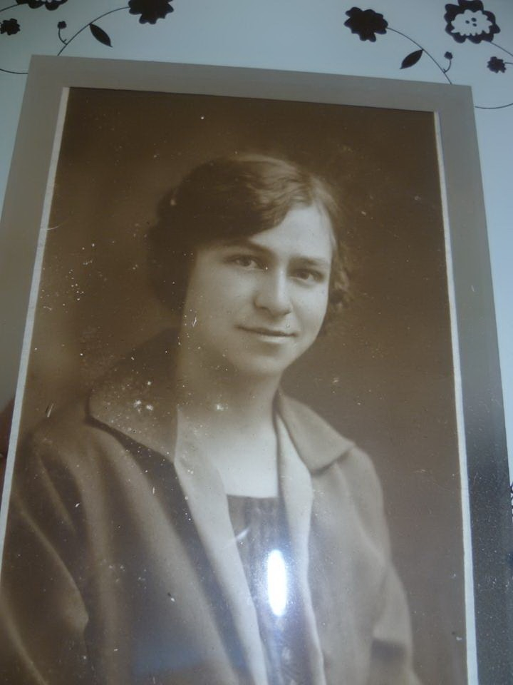
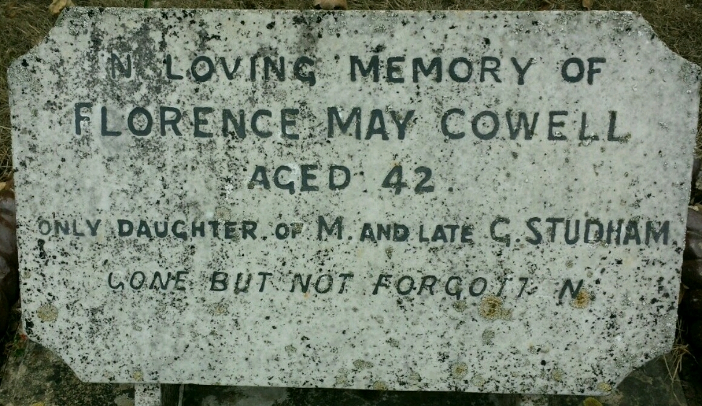
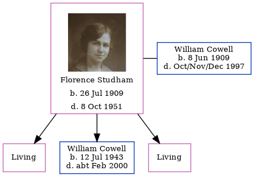

Florence May Cowell (née Studham) 1909 - 1951
[ Home ] | [ Calendar ] | [ Surnames Index ] | [ Errors ] | [ Family History ]Florence Studham, the wife of William John Cowell (the first cousin once-removed on the mother's side of Nigel Horne), was born in Minster, Thanet, Kent, England on 26 Jul 19091,2,3,4, was baptised there at St Mary The Virgin on 5 Sept 1909 and married William (a coal agricultural merchants lorry driver with whom she had 3 children: Frances M, William Albert John and Ellen, along with 2 surviving children) in Thanet, Kent, England around Aug 19315.
During her life, she was living at her birthplace on 2 Apr 19111; and at 2 Mill Row, Birchington, Kent on 29 Sept 1939.
She died on 8 Oct 1951 in Thanet3 (age: 42 liver cancer) and was buried on Minster Cemetery, Tothill Street, Minster in Thanet after 8 Oct 1951.
Children
- William Albert John was born on 12 Jul 1943
Citations
- 1911 England Census Online publication - Provo, UT, USA: Ancestry.com Operations, Inc., 2011.Original data - Census Returns of England and Wales, 1911. Kew, Surrey, England: The National Archives of the UK (TNA), 1911. Data imaged from the National Archives, London, England. (Age: 1; Relation to Head of House: Daughter)
- 1939 Register - Findmypast (was the wife of the head of the household)
- England & Wales, Death Index: 1984-2005 Online publication - Provo, UT, USA: The Generations Network, Inc., 2007.Original data - General Register Office. England and Wales Civil Registration Indexes. London, England: General Register Office. © Crown copyright. Published by permission of the Cont
- England & Wales, FreeBMD Birth Index, 1837-1915 Online publication - Provo, UT, USA: The Generations Network, Inc., 2006.Original data - General Register Office. England and Wales Civil Registration Indexes. London, England: General Register Office. © Crown copyright. Published by permission of the Cont
- England & Wales, Marriage Index: 1916-2005 Online publication - Provo, UT, USA: The Generations Network, Inc., 2009.Original data - General Register Office. England and Wales Civil Registration Indexes. London, England: General Register Office. © Crown copyright. Published by permission of the Cont
- 1911 Census for England & Wales - Findmypast (was age 1 and the daughter of the head of the household)
Media
florence studham

florence studham 3
Florence May Studham - Headstone

Florence May Studham - 2
1939 Register Transcription - TNA-R39-1751-1751G-020-35
England & Wales marriages 1837-2008 - BMD/M/1931/3/AZ/001364/036
England & Wales births 1837-2006 - BMD/B/1909/3/AZ/000561/370
England & Wales deaths 1837-2007 - BMD/D/1951/4/AZ/000194/009
1911 Census for England & Wales - GBC/1911/RG14/04476/0067/3
1939 Register - TNA/R39/1751/1751G/020/36
England Births & Baptisms 1538-1975 - R_884575806
Kent Baptisms - GBPRS/CANT/B/96512915
Family Tree
Map
Generated by ged2site. Last updated on Jul 3, 2024
Known Issues
Burial place (Minster, Thanet, Kent, England) has no citations
Baptism information not used to determine a parent
Residence record for 29 Sep 1939 contains no citation
No records of living with anyone
Adding date of burial as 'aft 8 Oct 1951'